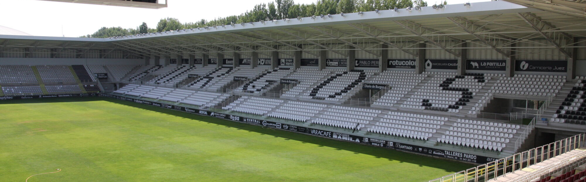
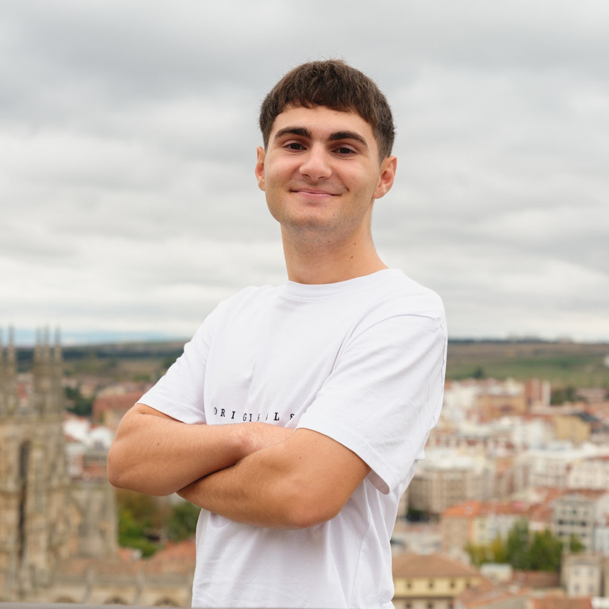
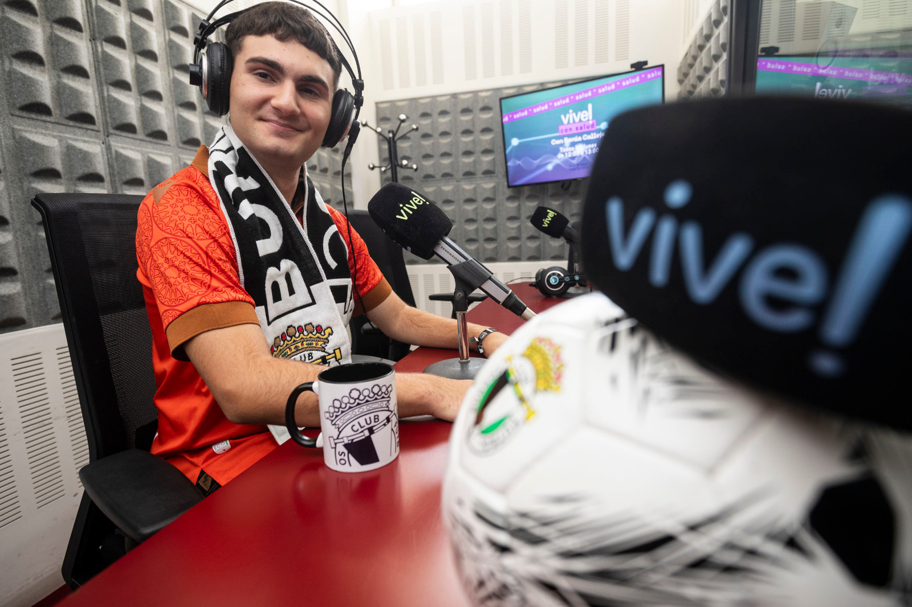

Fanáticos del fútbol,
sin filtros.
Mezclamos periodismo tradicional y moderno para contar la actualidad del Burgos CF como se siente: Con datos, con opinión, con análisis, y sobre todo, con pasión blanquinegra.
Estadio El Plantío · BurgosÚltimas noticias

Quiénes somos

Una cuenta hecha por y para aficionados
Somos una cuenta dedicada al fútbol español donde mezclamos el periodismo tradicional con el periodismo más moderno.
El integrante principal y creador de Fanáticos es Manuel Cavia, un joven muy fanático del Burgos CF, con un sueño por cumplir: Ser periodista deportivo.

Artículos, entrevistas y radio
Realizamos todo tipo de cosas en relación con el fútbol y el periodismo: artículos, entrevistas, eventos, podcast, opiniones, crónicas...
Además, hablamos todos los martes de 23:00 a 00:00 en Vive Radio Burgos 100.0 FM, en nuestro propio programa Fanáticos del BCF.

El inicio de un sueño
Nuestro futuro es el motivo principal de la creación de Fanáticos.
El objetivo que nos marcamos con el inicio de este proyecto fue el de introducirnos y coger experiencia en el mundo del periodismo deportivo, como así hemos podido vivir con experiencias únicas en televisión, radio, acreditaciones y entrevistas. Es decir, Fanáticos es el inicio de un sueño.